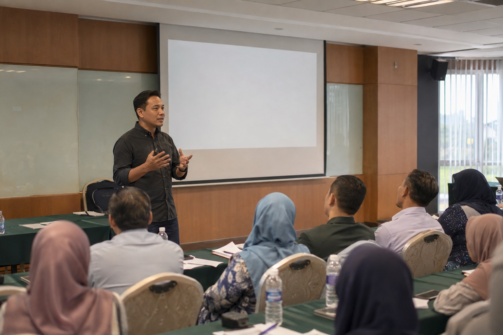
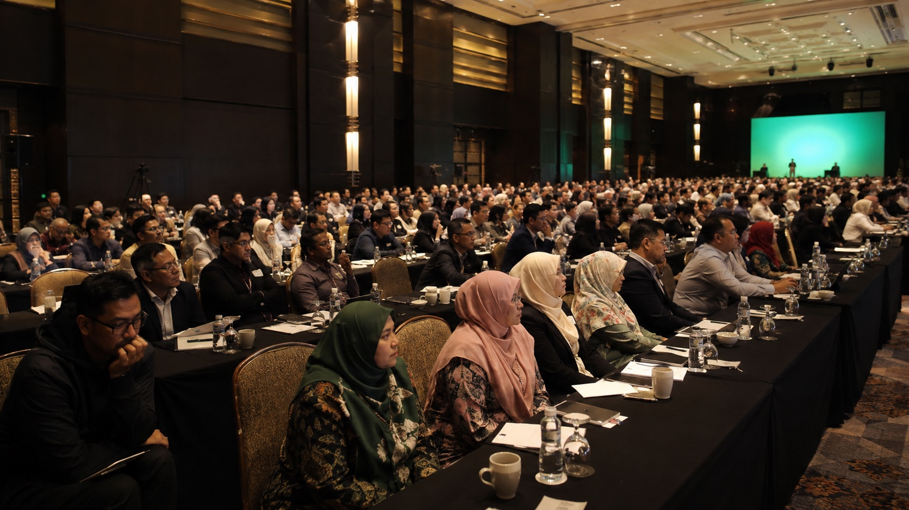
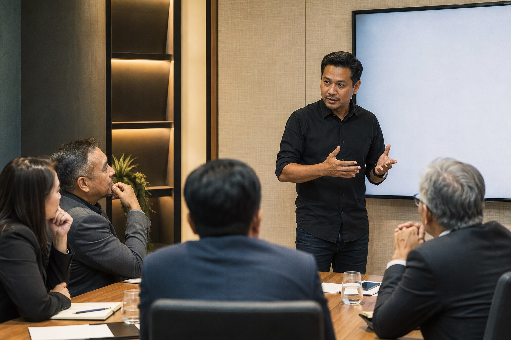
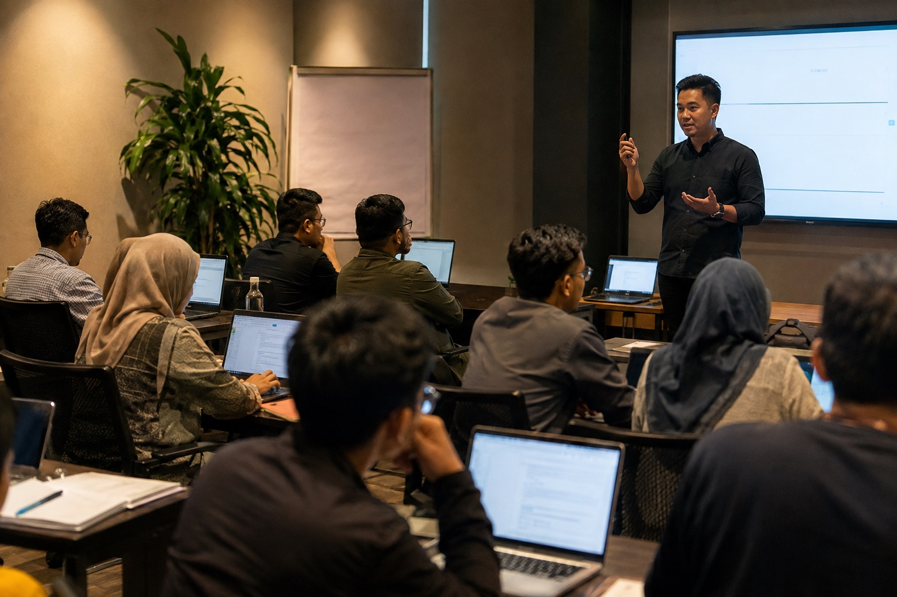
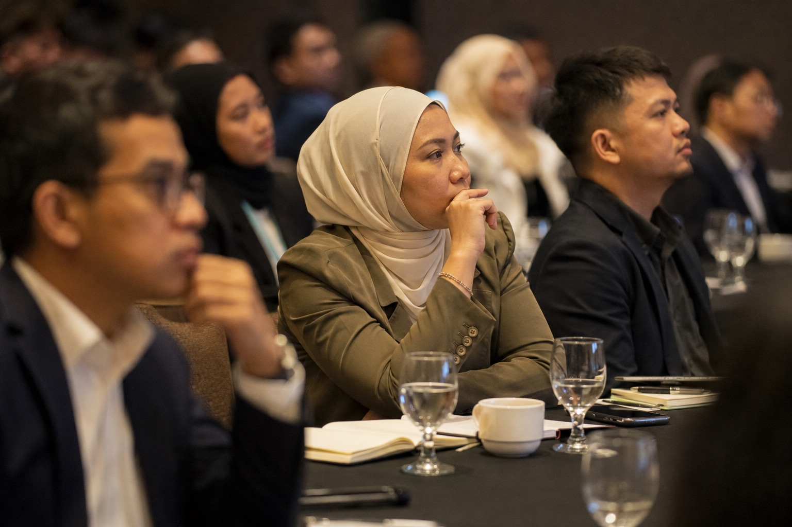

Public sector training01
Training · Community
A room that went from curiosity to usable language.
Leaders and officers left with a clearer AI vocabulary, practical use cases and a shared basis for decision-making.
View receipt →
Work · Proof that the room moved
Ideas matter. Outcomes matter more. I document the rooms, the work and the operating shifts they produce. Below are selected receipts from speaking, advisory and system-centred engagements.
Featured work
Different rooms. Same ability to make the work useful.

Leaders and officers left with a clearer AI vocabulary, practical use cases and a shared basis for decision-making.
View receipt →
The session aligned leadership around what AI should change, what it should not change, and where workflow truth actually lived.
View receipt →When the temptation was to buy more tools, the work was to understand process, friction and ownership first.
View receipt →
Not abstract futures. Immediate language, live examples and adoption that felt possible.
View receipt →Selected engagements
A clean ledger of rooms, formats and what moved.
| Room | Focus | Format | Outcome |
|---|---|---|---|
| Leadership briefing | AI strategy and responsible adoption | Closed-door briefing | Clearer priorities and a 12-month action plan |
| Public workshop | Practical AI for work and life | Half-day workshop | Higher confidence, practical use cases, strong feedback |
| Team enablement | AI tools, workflows and productivity | Hands-on training | Immediate application in daily work |
| Workflow review | Process, friction and system design | Advisory engagement | Documented workflow map and recommended changes |
| Panel / media appearance | AI, work and society | Panel discussion / interview | Broader public understanding and reach |
| Community session | AI for entrepreneurs and educators | Talk + Q&A | Actionable ideas and continued community engagement |
A broader picture
I have worked near code, commerce, operations, payroll, communities, media, aviation and live rooms. The pattern is consistent: useful work survives pressure because it respects context.
Community scale and audience reach
Operations mindset
Years of online business exposure
Data exposure at operational scale
Deep exposure inside a major brand environment
Trust across sectors
Different sectors, different stakes, same job: help the room think more clearly than it did before.
Policy, delivery and public value.
Strategy, people and real-world execution.
Practical skills for real opportunities.

Voices from the room
“Clear, practical and immediately useful.”
“He did not simply explain AI. He made the room think differently.”
“We left with a better question and a clearer next move.”